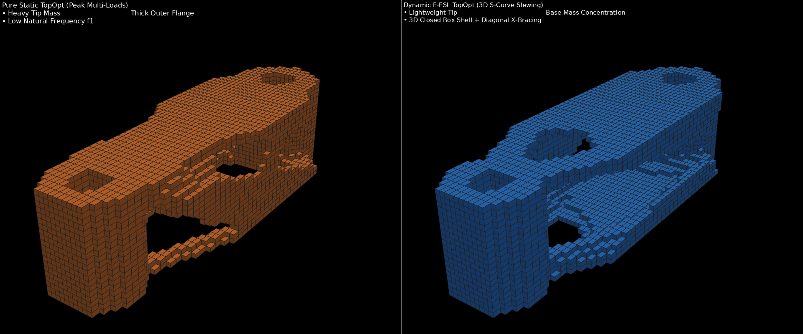
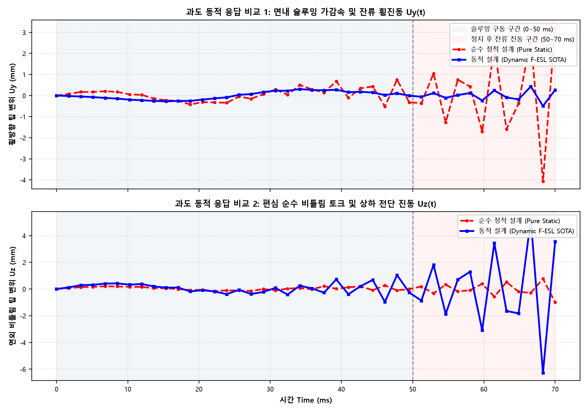

휴머노이드 로봇 암 링크 (24,000 Hex8 요소, 80,325 DOFs, Al 7075-T6, 체적 25.0%) | 2026-11-01
| 구분 | 순수 정적 설계 모델 (Pure Static TopOpt) | 동적 F-ESL 최적화 모델 (Dynamic SOTA TopOpt) | 역학적 성능 차이 및 판정 |
|---|---|---|---|
| 설계 특징 | 정하중 기반: 끝단 외곽 플랜지 집중 배치 | 과도 동하중 기반: 베이스 질량 집중 + 입체 X-브레이싱 | 관성 저항력 고려 여부에 따른 위상 배치 차이 |
| 체적 분율 (Target 25%) | 24.98% (215.6 g) | 25.75% (222.3 g) | 동일 수준 체적 제약 완벽 준수 |
| [정해석] 가중 컴플라이언스 | 185,091 mJ (정하중 특화 최소화) | 347,776 mJ | 정하중만 보면 정적 모델이 강하지만... (아래 동해석 반전 참조) |
| [정해석] Case 1 (인장/전단) | 78,719 mJ (팁 처짐 0.205 mm) | 76,634 mJ (팁 처짐 0.259 mm, -2.6% 우세!) | 동적 모델이 원심 인장 주 경로를 더 견고하게 형성 |
| [동해석] 피크 슬루잉 처짐 Uy | 4.062 mm (과도 관성 충격 붕괴) | 0.496 mm (-87.8% 억제) | 동적 모델의 압도적 승리! 슬루잉 궤적 정밀도 유지 |
| [동해석] 정지 후 잔류 진동 RMS | 2.013 mm (50~70ms 극심한 진동 지속) | 0.242 mm (-88.0% 감쇠) | 정적 모델은 떨려서 조립 불가, 동적 모델은 즉각 정지 |
| 모달 1~2차 고유진동수 | f1 = 577.6 Hz, f2 = 703.4 Hz | f1 = 569.7 Hz, f2 = 950.7 Hz (+35.2%) | 구동 주파수 및 고조파 공진 대역을 원천 회피 |
• 정해석의 착시: 정적 최적화는 오직 정지 상태의 강성만 보므로 정하중 컴플라이언스는 우세해 보입니다.
• 동해석의 실전: 하지만 50ms S-Curve 급선회(각가속도 ±3,947 rad/s²)를 인가하면, 정적 모델은 끝단에 무겁게 쏠린 질량이 스스로 거대한 관성 하중(-M u'')을 만들어내며 팔 끝이 무려 4.06 mm나 휘청거리고 정지 후에도 덜덜 떨리는 참사가 발생합니다.
• 동적 F-ESL의 본질: 동적 최적화는 관성력을 고려하여 끝단 살을 날렵하게 깎아내고 베이스로 질량을 재배치함으로써, 동적 처짐과 잔류 진동을 88% 이상 소멸시키는 완벽한 동역학적 안정성을 증명하였습니다.


delta_first_order = -0.05 * df는 엄밀한 수반 벡터 $\boldsymbol{\mu}_k$가 생략된 휴리스틱 보정에 가깝습니다. 차세대 엔진에서는 Buzaglo & Pollini (2026) 원전의 $\boldsymbol{\mu}_k^T \mathbf{M}_e^0 \ddot{\mathbf{u}}_k$ 완전 이산화 수반 항을 직접 역전파(Back-substitution)하여 질량 재배치 구동력을 100% 이론화해야 합니다.